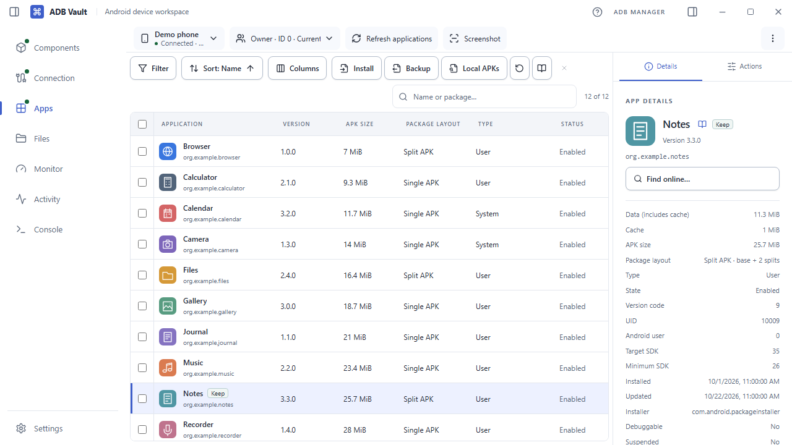
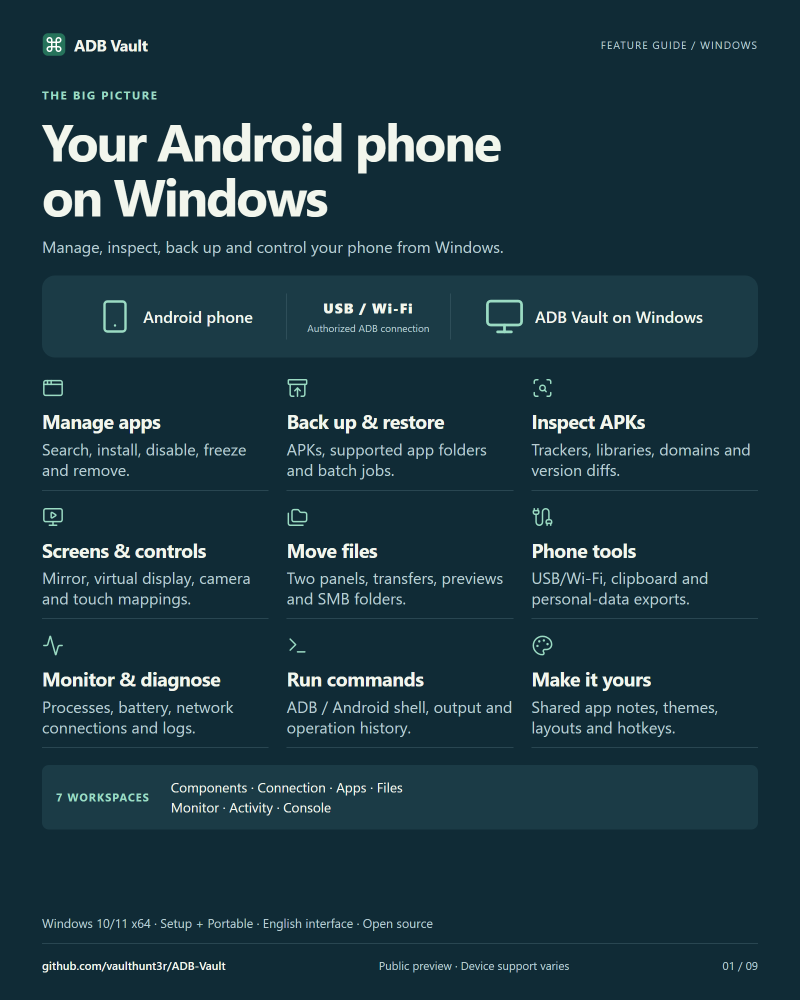

Windows 10/11 x64 / Public preview
Your Android phone,
from Windows.
Inspect apps and APKs, back up packages, move files and open a phone app in its own desktop window.
v0.1.0 · English interface · Release notes & checksums


02 / Video
Watch the feature guide
From a package list to a verified backup, a touch binding or an APK comparison.
03 / Illustrated guide
Explore the nine cards
Choose a topic, then open the image to read it at full size.


04 / Compatibility
First public preview
Testing has covered a limited set of phones. Android version, firmware and permissions affect what each feature can do. Back up important apps and files before making changes.
If something fails, include the steps, phone model, Android version and Windows version in your report.
Report an issue ↗